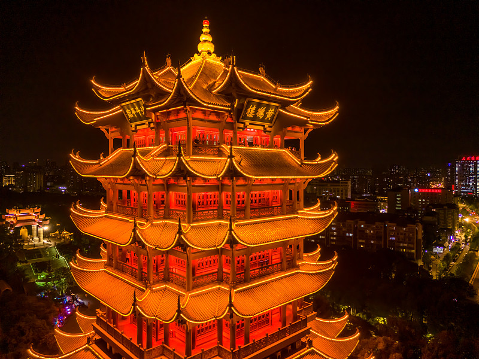

V·01
 黄鹤楼 · 晴日正面
黄鹤楼 · 晴日正面
黄鹤楼 · 晴日正面
晴日正面
蓝天与绿树之间，五层飞檐层层收拢，橙黄瓦顶是画面里最醒目的颜色。
提到武汉，最先被想起的往往是黄鹤楼。它立在蛇山之巅、临近长江， 飞檐层叠、橙瓦朱柱。这一页从白天、夜景与高空航拍三个视角，定位这座城市的标志建筑。
黄鹤楼 · 晴日正面
蓝天与绿树之间，五层飞檐层层收拢，橙黄瓦顶是画面里最醒目的颜色。

黄鹤楼 · 入夜亮灯夜色里塔身被暖红色灯光勾勒，飞檐轮廓清晰，和白天的气质完全不同。
从空中看，地标被绿树与道路环绕，老城肌理和远处现代楼宇连成一片。
黄鹤楼 · 山林外观
楼背靠蛇山山林，前方是街道与城市，历史建筑与现代楼群在同一画面里并置。
黄鹤楼地处武昌蛇山之巅，濒临长江，是武汉最具代表性的城市标志之一。 楼体五层，飞檐向外舒展，登上高处可以眺望江面与城区方向。
逛地标时更在意它和周围环境的关系：楼背靠山林，前方是街道与城市， 历史建筑与现代楼群在同一画面里并置，正是武汉城市面貌的缩影。